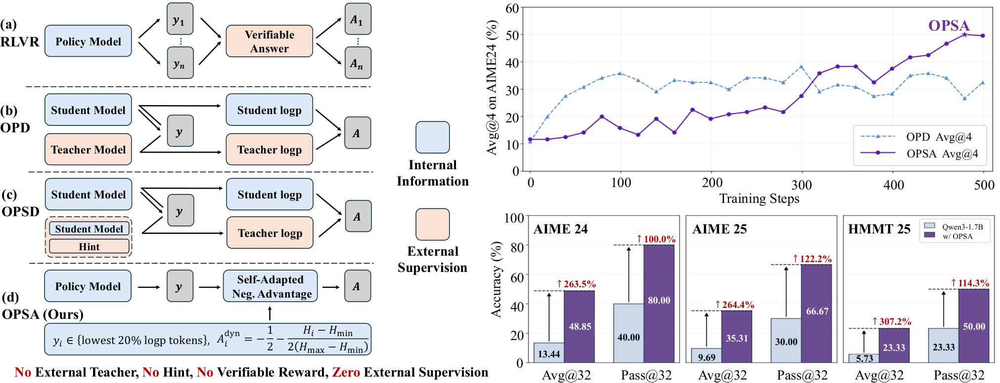

Does On-Policy Distillation Really Distill? From Noisy Teacher to Self-Improvement (OPSA)
TL;DR
- Ding & Zhang (Purdue) dissect on-policy distillation (OPD) and find the teacher's token-level supervision on student-sampled trajectories is heavily noisy — and gets noisier as the teacher grows: 30.6% of verifiable answer tokens get wrong-signed advantages under a 4B teacher, 50.6% under Qwen3-235B-A22B, which assigns negative advantage to 97.8% of correct answers. Yet students trained only on noisy trajectories improve just as fast.
- Ablations show where the gains actually live: only the ~20% lowest-log-probability tokens carry learning signal, negative advantages do the work, and replacing all teacher advantages with a fixed −0.5 matches standard OPD. The "distillation" is mostly self-suppression of the student's own tail tokens.
- They turn this into OPSA: teacher-free, reward-free, label-free on-policy training that assigns entropy-adaptive negative advantages to the lowest-logp 20% of sampled tokens. Qwen3-1.7B jumps from 13.44 to 48.85 Avg@32 on AIME24 (+35.41, a 263% relative gain), beating GRPO (33.96), OPD (32.08), OPSD, and TTRL, and more than doubling Pass@32 — with zero external supervision.
Why this matters
OPD is currently the standard answer to RLVR's sparse-reward problem: dense token-level signal, no verifier needed, and it powers most of the distillation pipelines in this tracker. This paper attacks its foundational assumption — that the reverse-KL advantage transfers teacher knowledge. If most of OPD's gain survives deleting the teacher, then (a) a chunk of the "distillation" literature is measuring an unacknowledged self-training effect, and (b) the cheapest baseline for any OPD paper is now "fixed negative advantage on low-logp tokens", which costs no teacher forward passes at all. For anyone budgeting post-training compute, OPSA is the aggressive claim: dense-signal self-improvement at RL-free cost, from questions alone (they train on DAPO-17k questions only, no answers). It's also a second data point — after TTRL and u-OPSD — that "supervision-free post-training" is becoming its own subfield, with the interesting twist that OPSA's mechanism is explicitly not consensus-sharpening but tail-suppression plus head-redistribution.
The core idea
OPD minimizes reverse KL on student-sampled prefixes; in RL form the token advantage is the teacher–student log-ratio:
where \( \pi_s, \pi_t \) are student and teacher policies and \( y \) is a student rollout. The logit-level gradient explains which tokens matter:
with \( z_t^v \) the logit of vocabulary token \( v \) at position \( t \). The gradient vanishes when \( |A_t| \) is small or the student is already confident — and empirically 51.7% of tokens have \( |A_t|<10^{-4} \), concentrated exactly on high-logp tokens. So the action is in low-logp tokens, and there the teacher's signal is mostly just "negative". OPSA keeps the negative push but sizes it by the student's own uncertainty: within each response's lowest-20%-logp positions, token entropy \( H_i \) is min-max normalized and the advantage interpolates from −1/2 (lowest entropy) to −1 (highest):
No teacher, no reward, no reference answers — the training signal is manufactured entirely from the student's sampling statistics.
How it works
OPSA training loop (per batch of questions x, no labels):
1. sample rollouts y ~ π_θ(·|x) # stochastic, non-thinking mode
2. for each response y:
3. compute token logp and entropy H_i under π_θ
4. S = the 20% of tokens with lowest logp # only these get gradients
5. H_min, H_max = min/max entropy over S (per response)
6. for i in S:
7. A_i = -1/2 - (H_i - H_min) / (2*(H_max - H_min))
8. # high-entropy (fork) tokens get advantage → -1
9. # low-entropy tail slips get advantage → -1/2
10. policy-gradient step on L_OPSA (advantages A_i, tokens in S only)
11. no teacher forward pass, no verifier, no reward model
Why does pushing down on tokens improve reasoning? The paper's mechanism analysis splits positions by entropy: at high-entropy forks, suppressing a sampled tail token reallocates mass to the competing head tokens evenly (the softmax gradient in Eq. above pushes up unsampled tokens proportional to their probability), so the model keeps multiple plausible continuations alive rather than collapsing; at low-entropy positions, confident predictions are rarely in the lowest-logp 20% and stay untouched. High-entropy forks are where reflective tokens ("wait", "but") live, and OPSA makes those branches more reachable — response length grows to ~12K tokens, reflective-token frequency rises, and masking fork positions from training eliminates the gains entirely (length collapses at ~300 steps). Crucially, the fixed positive advantage control collapses the policy within 40 steps, and the reversed entropy correlation (\( \delta=-1 \)) destabilizes — so both the sign and the entropy-direction of the signal are load-bearing.

Figure 1 from the paper: unlike RLVR/OPD variants that derive advantages from external supervision, OPSA assigns entropy-adaptive negative advantages to low-probability tokens — suppressing tails, redistributing mass among head tokens at forks — and outperforms OPD without any teacher.Results
Trained on DAPO-17k questions (no answers), slime framework, 8×H100/H200, evaluated non-thinking unless noted:
- Qwen3-1.7B: AIME24 13.44 → 48.85 Avg@32 (+35.41, ↑263.5%), Pass@32 40.00 → 80.00; AIME25 9.69 → 35.31; HMMT25 5.73 → 23.33. Out-of-domain: MBPP+ +1.20, GPQA-Diamond +4.48 — small but positive, so no obvious catastrophic transfer cost.
- Baselines (Qwen3-1.7B, 3-benchmark avg): OPSA 35.83 Avg@32 vs GRPO 24.79, OPSD 23.58, OPD (4B-Instruct teacher) 22.15, TTRL 11.81 — +11.04 over the best externally supervised baseline, +8.89 on Pass@32. TTRL's consensus-sharpening notably degrades Pass@k; OPSA doesn't (Jaccard-distance diversity of 32 samples approaches the base model as length grows).
- Scales/families: Qwen3-4B AIME24 23.33 → 62.08; Qwen3.5-9B — already strong at 76.35 — still gains +11.46 (AIME24) and +22.92 (HMMT25). Gains persist with thinking mode enabled at inference (46.56 → 52.50 AIME24), so OPSA complements rather than substitutes native long CoT.
- Diagnostics behind the method: teacher noise rate (wrong-signed advantage on verifiable \boxed{} tokens) rises 30.6% → 34.7% → 50.6% for 4B → 30B-A3B → 235B-A22B teachers; training restricted to noisy-only trajectories matches standard OPD; fixed −0.5 advantage on lowest-20%-logp tokens matches OPD; entropy-adaptive version reaches 50.0 Avg@4 vs OPD's 35.13.
How it connects
- u-OPSD and TTRL: the supervision-free cluster. TTRL manufactures signal from majority vote (and sacrifices Pass@k); u-OPSD from self-distillation with hints; OPSA from sampling statistics alone — the cleanest supervision diet of the three, and the only one with an explicit mechanism story (fork-token redistribution).
- Weak-to-Strong OPD and Multi-Turn OPD via Teacher Replay: both engineer better teacher signals. This paper says the teacher signal was mostly a carrier wave for "suppress your tails" — those pipelines should rerun with a fixed-negative-advantage control before attributing gains to their teacher-side machinery.
- Switch Distillation (tracked today, Meta): complementary evidence that KD's value is regime-dependent — forward KL helps reasoning but slows factual recall in mid-training. Both papers chip at "distillation transfers knowledge, uniformly, always."
- AgentOPSD: recursive self-distillation for agents — if OPSA's finding generalizes to agentic trajectories, the teacher there may also be replaceable with entropy-shaped self-suppression, which would make recursive loops dramatically cheaper.
- TailSFT: same underlying intuition from the SFT side — what you remove/suppress from the distribution's tail matters as much as what you add.
Critical take
The diagnosis is stronger than the prescription. The noise analysis is genuinely damning for naive OPD-at-scale (a 235B teacher whose advantage sign is wrong half the time on verifiable tokens is not "supervising" in any meaningful sense — though note their noise metric only audits answer tokens, a small slice of the trajectory). But OPSA itself is evaluated almost entirely on math reasoning for Qwen models in non-thinking mode; MBPP+/GPQA gains are ~1–4 points, and there's no test on tasks where the base model's head tokens are systematically wrong — tail suppression can only reshuffle mass the model already has, so it should be useless (or harmful) where correct behavior lives in the tail. That's the fundamental ceiling: OPSA is self-improvement in the RLVR-elicitation sense (sharpening latent competence), not knowledge acquisition — a true teacher can inject capabilities the student lacks, and by construction OPSA cannot. The right reading is not "teachers are useless" but "the reverse-KL-advantage mechanism wastes the teacher": it reduces rich teacher logits to a mostly-negative scalar. Also flag: min-max entropy normalization within the lowest-20% slice is a fragile statistic (a single outlier position rescales every advantage in the response), and the 20% threshold is inherited from their diagnostic, not swept in the main text (inferred from the thread and main text — verify ablations in the appendix).
If you remember three things
- OPD's teacher signal is noise-heavy (30–50% wrong-signed on verifiable tokens, worse for bigger teachers), and students improve anyway — a fixed −0.5 advantage on the lowest-logp 20% of tokens replicates OPD.
- OPSA = negative, entropy-scaled advantages on the student's own low-logp tokens: no teacher, reward, or labels; +35.41 Avg@32 on AIME24 for Qwen3-1.7B, beating GRPO/OPD/OPSD/TTRL, with diversity and Pass@32 preserved via even redistribution at high-entropy forks.
- Before crediting any distillation or RL pipeline, run the self-suppression control — and remember OPSA's ceiling: it sharpens what the model already knows; it cannot import what only the teacher knows.